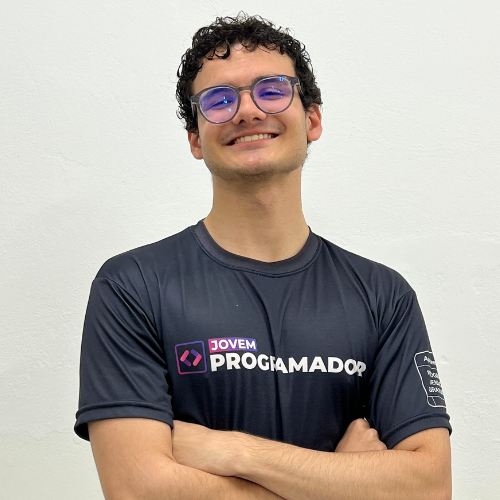

SenaChat
O Jovem Programador
O Jovem Programador é um programa de capacitação tecnológica que permite a qualquer pessoa, a partir de 16 anos e cursando a partir do 1º ano do ensino médio, qualificar-se em Tecnologia da Informação.
O programa é uma iniciativa do SEPROSC (Sindicato das Empresas de Informática, Processamento de Dados e Tecnologia da Informação do Estado de Santa Catarina), com realização do SENAC (Serviço Nacional de Aprendizagem Comercial). Essa parceria auxilia na formação profissional e disponibiliza instalações completas em aproximadamente 23 municípios de Santa Catarina.
Os alunos contam com infraestrutura técnica e aulas em formato híbrido (presencial e virtual). O objetivo central é proporcionar uma formação de qualidade para que os estudantes se preparem para buscar colocações em pequenas, médias e grandes empresas da área de TI.
O que é o SenaChat?
No curso do Jovem Programador, os alunos desenvolvem um trabalho final: o Projeto Integrador, no qual implementam todo o aprendizado em uma única solução.
O SenaChat é o resultado do Projeto Integrador de 2025 do Jovem Programador na cidade de Palhoça/SC, desenvolvido pelos alunos Davi Amorim de Lima, Isabella Schlemper Bernardo, Maria Fernanda Delfino e Nathalia Schlemper Bernardo. O trabalho teve como objetivo criar um chatbot capaz de responder dúvidas sobre o curso utilizando Inteligência Artificial.
Para isso, o sistema foi projetado para receber perguntas dos usuários, interpretar automaticamente o conteúdo disponível no site oficial do curso e gerar respostas, sem depender de um cadastro manual de perguntas e respostas.
O desenvolvimento foi dividido em dois módulos:
Primeiro módulo (Back-end):
Focado na coleta de informações do site e na produção de respostas automáticas por meio de uma API.
Segundo módulo (Front-end):
Voltado à construção de uma interface web amigável e responsiva, onde os usuários podem interagir com o chatbot de forma clara e acessível.
O projeto também cumpriu rigorosos requisitos de acessibilidade. Ao final, foram entregues documentos de requisitos, códigos-fonte, protótipos, testes e demonstrações práticas que comprovam o funcionamento do sistema desenvolvido.

Acessibilidade para todos
Um dos requisitos do Projeto Integrador era a inclusão de, pelo menos, um recurso de acessibilidade digital no chatbot. No entanto, nosso grupo decidiu ir mais longe: pensamos em criar uma ferramenta verdadeiramente inclusiva. Implementamos diversos recursos de acessibilidade e submetemos o projeto à aprovação de pessoas que realmente precisam e utilizam tecnologias assistivas no dia a dia.
Os benefícios são claros: a implementação da acessibilidade digital democratiza o acesso, garantindo o entendimento e o controle da navegação por todos os usuários, independentemente de suas capacidades físico-motoras, perceptivas, culturais ou sociais.
Acessibilidades que implementamos
Painel de acessibilidade customizável
Desenvolvemos um painel que permite ajustes de tema, fonte e filtros para daltonismo em tempo real, dando autonomia ao usuário para configurar a interface conforme sua necessidade visual.
Temas e contraste
Oferecemos modo claro, modo escuro e alto contraste. O alto contraste é fundamental para pessoas com baixa visão (visão subnormal) ou sensibilidade à luz (fotofobia), pois destaca os elementos essenciais da tela, facilitando a leitura e reduzindo a fadiga visual.
Tamanho do texto
Opções para aumentar a fonte, diminuir a fonte e resetar para o tamanho original. Esse recurso é ideal para idosos, pessoas com presbiopia ("vista cansada") ou baixa visão, permitindo que o conteúdo seja lido confortavelmente sem a necessidade de ferramentas de zoom externas que podem quebrar o layout da página.
Libras
Inclusão de um plugin de Libras (Língua Brasileira de Sinais). Essencial para a comunidade surda ou com deficiência auditiva severa que utiliza a língua de sinais como primeira língua, garantindo que o conteúdo textual seja traduzido e compreendido.
Filtros de cor
Implementamos filtros específicos para diferentes tipos de discromatopsia (daltonismo):
• Protanopia: Filtro para quem possui deficiência nos cones vermelhos (dificuldade em
distinguir tons de vermelho e verde).
• Deuteranopia: Filtro para quem possui deficiência nos cones verdes (o tipo mais comum
de daltonismo).
• Tritanopia: Filtro para quem possui deficiência nos cones azuis (dificuldade com tons
de azul e amarelo).
• Normal: Visualização sem filtros, com as cores originais.
Suporte total a leitor de tela (ARIA)
O código-fonte foi marcado corretamente seguindo as diretrizes WAI-ARIA. Isso permite que pessoas cegas ou com baixíssima visão utilizem softwares leitores de tela (como NVDA ou VoiceOver) para "ouvir" a estrutura da página e o conteúdo do chat, garantindo uma navegação assistiva fluida.
Navegação por teclado
Implementamos uma navegação completa sem o uso do mouse, fundamental para pessoas com deficiências motoras ou que não conseguem utilizar dispositivos apontadores. Ela funciona da seguinte forma:
Atalhos no teclado
• Tab: Navega por todos os elementos.
• Shift + Tab: Volta para o elemento anterior.
• Espaço: Vai para o próximo conteúdo.
• Shift + Espaço: Rola a página para o conteúdo anterior.
• PageUp/PageDown: Têm a mesma função de rolar a página para cima ou para baixo.
• Home/End: A tecla "Home" leva ao topo da página, a tecla "End" leva direto ao final.
• Enter: Aciona botões ou links selecionados.
• Esc: Fecha menus dropdown abertos.
Depoimento de PCD's
Iago Barbosa
Estudante
Daltonismo
"Gostei de todos os filtros, as cores foram bem aplicadas. Parabéns pelo trabalho!"
Maria Oliveira
Desenvolvedora
Daltonismo
"Os filtros de cor funcionam perfeitamente. Pela primeira vez vi os gráficos com clareza."
Pedro Santos
Analista
Deficiência Motora
"A navegação por teclado é fluida e lógica. Consigo acessar tudo sem usar o mouse."
Recursos adicionais
Para tornar a experiência de aprendizado dos próximos alunos
ainda melhor, nós criamos um simulador de back-end para a linguagem Python, que foi a tecnologia
ensinada na grade de 2025 (ressaltando que as linguagens abordadas podem mudar conforme o
ano).
A ferramenta funciona como um terminal exclusivo para Python: serve para o aluno inserir o
código, rodar e visualizar o resultado imediatamente. O objetivo é evitar que os estudantes
precisem "sair" do ambiente de imersão do curso buscando outros sites ou compiladores externos,
o que poderia gerar desentendimento entre os códigos e quebrar o fluxo de estudo.
Além disso, também disponibilizamos o BR Diagrama, um site desenvolvido pelo aluno Davi
Amorim de Lima. Embora tenha sido criado de forma paralela, fora das atividades obrigatórias do
curso, identificamos que a ferramenta poderia ajudar muito os novos alunos que entrarem no Jovem
Programador.
O site utiliza a linguagem SQL e funciona com visualização em tempo real: enquanto o usuário
digita o código de um lado da tela, a ferramenta gera automaticamente os Diagramas
Entidade-Relacionamento (DER) do outro. Além de facilitar a visualização da estrutura do banco
de dados, o sistema também aponta possíveis erros no código caso eles existam.
Simulador Python
Um terminal exclusivo rodando no navegador. O aluno insere o código, executa e vê o resultado instantaneamente, sem sair do ambiente de estudo.
Python
print("Olá, Mundo!")
> Olá, Mundo!
BR Diagrama
Ferramenta visual que gera Diagramas Entidade-Relacionamento (DER) automaticamente enquanto você digita código SQL. Identifica erros em tempo real.
SQL